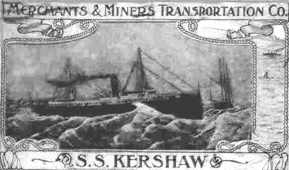

Kershaw
Built in 1899, the Kershaw, seen here in a 1906 post card, was a 282 foot, steel, passenger freighter. Run down in Nantucket Sound by the Liner President Garfield on June 1, 1928, the incident was desribed as one of the most spectacular collisions ever witnessed in New England waters.
